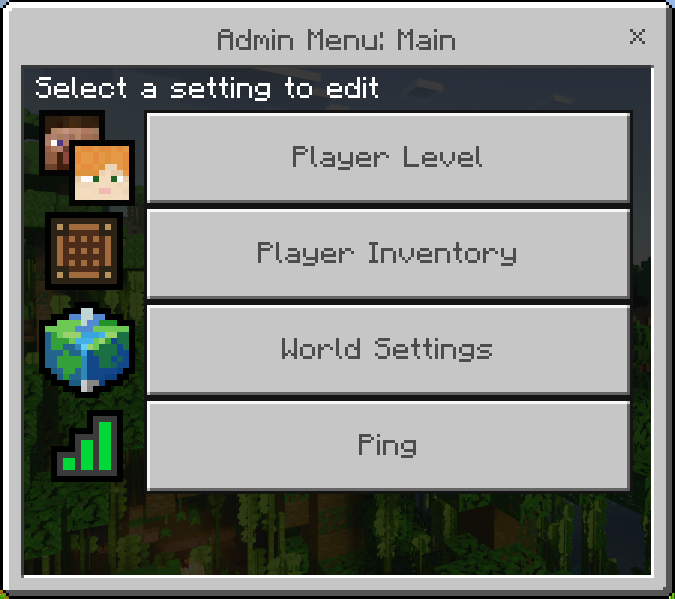

Avatar Addon 1.19.50!
- Version: 1.19.50
- Author: IBk
- Pack Created: August 04, 2021
- Recent Update: December 27, 2022
If you have any questions that are beyond the scope of this help file, Please feel free to ask on the Discord!
Installation
Follow the steps below to download and use avatar addon in minecraft:
- Download the pack from any link. Because you're actually reading the documentation, here is a no-ads link: Free Download
- Next, open it with in minecraft. If you're on PC, double click it. If you're on apple, use a different file editor to open it in minecraft (google drive works too). Android users can use "File Manger +" for importing into minecraft (If importing issues still persist then import manually).
- Make sure the download goes through as normal (check the bug fixing tab if not), and then apply both the resource and behaviour packs to your world as normal.
- You are good to go! Check the setup tab if you can't figure out how to get started.
Setup
When you start out, nothing will happen. First, you will have the bending scroll in your hotbar upon entry on the world. After that, you can choose your bending by opening it (long press or right click).
The options are avatar, fire, earth, water, air, and human (normal vanilla Minecraft, with the ability to learn chi-blocking).
When you pick a bending style, nothing will happen - you need to choose your moves for each of your “slots”. For instance, if you sneak then punch you will use whatever move is bound to slot 4. Let’s say you are an Airbender, and used the scroll to set slot 4 to Air Blast - when you sneak and punch, you will use Air Blast. You can use your scroll to bind moves to slots. Just right click/long press on your scroll, and click on the sub-menu button “Choose Slots”. Try picking slot 4 first (remember to click on submit after all slots choice has been filled), since it’s the simplest. Eventually, you’ll have your slots memorized, and a set of 4 moves you like best. These 4 that you have “slot loaded” is what makes you different from other benders of the same type.
Each type of bender will have a different moveset, and each individual bender will have an even more varied set of moves. As you level up, you get access to more moves. To level up, simply go about as normal - using moves will help you level up, but don’t try to afk, it won’t work.
Sometimes, bending can get annoying while just going about your normal tasks, so you can turn it off for a bit by holding arrows in your off-hand, or by typing right cliking/long pressing the scroll and then click/tap settings and click/tap the button that says "Enable Bending".
The moves and abilities of these classes are outlined below, and also through the bending scroll with the "Bending Info" section.
Have fun playing!
Admin Menu
How to get the settings menu as an operator. First, check that you are op on the current world. If you don't know how, press escape or pause and see if your name has the crown next to it. Then, check your scroll menu, and click through: Admin Menu, it should look like this:
There are a few options, and each will be described below:
- Player Level:
This option lets you edit any player's bending level. As you may already know, your level dictates what kind of moves you have access to and how strong each move is. The ability to edit it can be used to unlock all moves for testing purposes or to punish other players. Remember to click/tap submit afterwards. - Player Inventory:
This option powerful tool that allows an administrator or operator to view the contents of a player's inventory. This can be useful for a variety of reasons, such as helping to resolve disputes over lost items, checking for cheats or exploits, or simply for curiosity. - World Settings:
This settings controls a bunch of stuff. Firstly, the chat rank system. Chat ranks are enabled by default,and show an icon of your bending style next to your name when you send a chat message. You can enable and disable this feature with no consequence. Next up, the avatar setting. If it is enabled, players can freely select avatar - most likely you will have more than one avatar. But, if it's disabled, players can only choose one of the four nations bending styles to choose from. After that comes the shop system toggle - a setting that controlls whether players can buy, sell, and use money with the scroll shop menu. If enabled, players can wirelessly buy, sell, and store money in a scoreboard. If it is disabled, these options will not be available. Next, the sethome system - a setting that controlls whether players can set homes (6 is the upper limit) that they can teleport back to in seconds with the scroll (don't worry, they can't do it in combat). Finally, and most unstable - cooldown time, a setting that controlls whether players have a cooldown when using moves. If you want a smooth non-buggy experience DO NOT use this setting. It doubles the lag instantly, plus a plethora of other issues. As always, remember to click/tap submit afterwards. - Ping:
When this option is clicked, the server will respond with the current tps (ticks per second) and the player's ping in milliseconds. The tps is a measure of the server's performance, with a higher tps indicating a smoother and more efficient server. A tps of 20 is generally considered to be the target for a well-running server, although some servers may be able to handle higher or lower tps depending on their hardware and configuration.
Scroll
Here are the chat commands a player can use by defualt in Avatar Addon. Just type them into chat - if message is sent in chat, check if experimental is enabled.
| Command | Usage | Example |
|---|---|---|
| !help | Show a help menu | !help |
| !scroll | Gives you the bending scroll, which you can use to choose, choose slots, edit settings, and more! Just right click/long press it. | !scroll |
| !bending | Toggles your ability to bend, you can also put arrows in your offhand. | !bending |
| !stats @Playername | Shows a players stats, like kills, deaths and level! | !stats @GlitchyTurtle32 |
| !shop buy, sell, list, balance, pay, deposit, exract | Use the shop to sell and buy items, use !shop help to find out more |
!shop sell 10,000
!shop buy 1
!shop pay @GlitchyTurtle32 100 |
| !info moves, slots, passives | Get your current moves or slots to choose from! | !info moves
!info slots |
| !home set, teleport, delete, list | Creates or edits a home, which you can tp back too. | !home set SecondaryHome
!home teleport SecondaryHome |
Here are the commands & chat commands a player can use by as an admin in Avatar Addon. Some of these are functions, and others are ! commands.
| Command | Usage | Example |
|---|---|---|
| /function op | Make the player who runs the command a staff member, which grants them access to special staff commands. | /function op |
| /function settings/avatar, home, shop | Toggle a specific setting, like if players can use shops, avatar, or the home command. | /function settings/avatar
/function settings/home
/function settings/shop |
| !invsee @Playername | See a players inventory. | !bending |
| !levelup @Playername | Level a player up a certain amount. | !levelup @GlitchyTurtle32 |
| !ping | Check the current tps. | !ping |
Bending Moves
What moves and bonuses does each type of bender have?
Airbenders
Air Blast- Shoots a focused beam of air that does damage and knockback.
Air Dodge- Shoot yourself over 5 blocks to the left side to dodge other moves.
Air Push- Push the air around you to shoot back all nearby entities- up to 20 blocks away from you!
Air Pull- The opposite of air push, pulls all nearby entities close to you with strong winds- from up to 20 blocks away!
Air Launch- Launch yourself into the air on a blast of air - about 60 blocks!
Air Shockwave- Explodes out a shockwave of powerful air that deos damage.
Air Bubble- Defend yourself from projectiles.
Air Rush- Blast yourself forward through the air, this moves comes in clutch while falling!
Air Vanish- Puff up a smokescreen and get ivisibility for 10s to vanish out of sight.
Air Scooter- Hop on a bubble of air you can control! If you ram into entities, it does damage.
Air Tornado- Summon out a blade of air that you can steer by moving left and right.
Air Artillery- Shoots a blast of air that locks on to the closest entity, and does damage on impact!
Elytra Boost- Speed yourself up in the air, just like a rocket!
Triple Air Blast- Send curving blasts that do major damage, Punch to use the next combo piece.
Air Spirit(Sub bending)- Become a spirit and float through blocks![DUE TO BEDROCK BUGS, THIS MAY CRASH OR NOT WORK].
Passives- Light Bend(After sneaking for a certain time, you become invisible), Health(10 hearts), Immunity(Immune to fall damage, including elytra fall damage).
Waterbenders
Water Spear- Shoots a focused beam of water that does damage and knocback.
Water Wake- Shoot yourself over 5 blocks to the left side to dodge other moves.
Water Flood- Floods a nearby area, and does a small bit of damage to players.
Water Shield- Protect yourself from damage!
Water Launch- Launch yourself into the air on a blast of water - about 25 blocks!
Water Rush- Speed towards the nearest entity, it will stop you 3 blocks away.
Water Splash- Pushes all nearby mobs and players away with a wave of water.
Frost Walker- Walk on water until the cooldown is up.
Ice Cage- Lock entities in a radius of 5 blocks in a cage of ice.
Water Spike- Blast mobs up into the air on a spike of ice!
Ice Throw- Summons a pece of ice youc aim by looking around. Punch to fire, or just wait till the cooldown is up.
Water Blade Boost- Boost yourself away from danger and do damage. Punch to use the next combo piece.
Blood Bending(Sub bending)- Pick up entities and launch them into the distance! Only works on full moons.
Healing Cloud(Sub bending)- Bend the water vapor in the air to heal everything around you.
Healing Focus(Sub bending)- Heal everyone in a radius of 2.
Passives- Water strength(When in or touching water, you will get a strenght effect), Health(15), Immunity(You can breathe underwater), Bonus(On full moons you get extra resistance and strength).
Earthbenders
Earth Pillar- Lift the earth under you 4 blocks up.
Earth Burrow- Burrow 2 blocks under the ground to escape enemies, and look like you just teleported.
Earth Shove- Blasts a shockwave and does lots of damage to nearby players. Can also stop you from taking damage.
Earth Search- Search the blocks under you and one block in each direction for diamonds (1000 blocks total).
Earth Headbutt- Run fast and deal damage to nearby players!
Earth Throw- Summons a piece of ice you can aim by looking around. Punch to fire, or just wait till your cooldown is up.
Earth Top- Go to the highest block above you. Useful for getting out of caves or escaping!
Earth Spikes- Summons spikes in a line out from the player, which can be steered by moving.
Earth Big Spike- Summons a big spike five blocks out from the player, which launches the nearby players and does damage.
Earth Lift- Lifts a huge chunk of earth up with you.
Ultimate Rock Blast- Summon chunks of earth that target nearby entities. Punch use the next combo piece.
Metal Powerup(Sub bending)- Gain resistance by converting 2 iron ingots to defense! Almost no cooldown because it consumes iron instead!
Metal Blast(Sub bending)- Shoots a focused beam of metal that does damage (with no max damage cap) and knockback, as long as you have more than 4 iron in your inventory. Almost no cooldown because it consumes iron instead!
Lava Blast(Sub bending)- Shoots a focused beam of magma, as long as you have more than 8 dirt in your inventory. Almost no cooldown because it consumes dirt to convert to lava!
Magma Floor(Sub bending)- Replaces the floor with magma, as long as you have more than 8 dirt in your inventory.
Passives- Earth Sprint()Firebenders
Fire Blast- Shoots fire 10 blocks in front of you!
Fire Finder- Shoots a blast of fire that locks on to the closest entity, and does damage on impact!
Fire Shield- Block all incoming blasts with the power of fire!
Fire Sprint- Sprint so fast you leave a trail of fire in your wake!
Fire Charge- Invigorate yourself mid fight with fire to get a few extra hearts!
Fire Boosters- Lets you fly by shooting out fire! If you ram into entities, it does damage.
Fire Shockwave- Explodes out a shockwave of powerful fire that does damage.
Fire Smite- Set all entities near you on fire and do some basic damage!
Fire Finale- Punch a massive combustive impact into the ground, killing you and all nearby entities, but with a five second fuse!
Fireball- Launch a fireball in the direction you're looking!
Triple Firewall- Shoot up a wall of flames that does major damage. Punch use the next combo piece.
Lighting Strike(Sub bending)- Strike lightning on enemies 7 blocks out!
Lightning Smite(Sub bending)- Strike lightning on multiple enemies in a radius of up to 8 blocks out!
Combustion Blast- Shoots out a beam that explodes when it hits either players or blocks!
Passives-
FAQ
A FAQ is a list of frequently asked questions (FAQs) and answers on a particular topic.
Source & Credits
Images:
- Unsplash - https://unsplash.com/
Fonts:
- Icons Font Face - https://fontawesome.com/
Scripts:
- jQuery - http://www.jquery.com/
- Bootstrap 4 - http://getbootstrap.com/
- Highlight Js - https://highlightjs.org/
- jQuery easing - http://gsgd.co.uk/sandbox/jquery/easing/
- Magnific Popup - http://dimsemenov.com/plugins/magnific-popup/
Support
If this documentation doesn't answer your questions, So, Please send us Email via Item Support Page
We are located in GMT +5:30 time zone and we answer all questions within 12-24 hours in weekdays. In some rare cases the waiting time can be to 48 hours. (except holiday seasons which might take longer).
Don’t forget to Rate this template
Go to your Themeforest Profile > Downloads Tab > & then You can Rate & Review for our template.
Thank You.
Changelog
See what's new added, changed, fixed, improved or updated in the latest versions.
For Future Updates Follow Us @themeforest / @facebook / @twitter / @Dribbble
Version 1.19 (12 Oct, 2020)
- Added Sub-bending: This new update adds sub-bending, which is unlocked at level 15, and can differ for each type. For Airbenders: Spirit - lets you become a spirit (unlockable new move at level 50), which can fly through blocks and scout areas out. Projectile - bends the air around your arrows so they never miss again (range increases with level). For Firebenders: Lightning - certain moves get a buff of added lightning and you unlock a few new moves. Combustion - get an extra move similar to fire blast, but a beam with more range. You must be on full health to use. For Waterbenders: Blood - lets you freeze players in place on full moons. Healing - heal yourself and other players. Buffs any healing moves greatly, and adds team moves. For Earthbenders: Metal - get extra iron when mining and a few new moves that consume iron ingots. Lava - get new moves that have a separate cooldown!
- Added Shop: This new update adds a command known as !shop, which you can use to buy and sell items using just the chat. It has a bunch of subcommands, here they all are: !shop sell
- Sells whatever item you have in your main hand, for whatever price you specify from 10 to 10,000. !shop list - List all the items in the shop currently, each with their selection value so you can buy them. !shop buy - Buys the item with that selection value, automatically using your money to pay. !shop pay - Added Optimizations: The entire addon has been optimized, so future updates will come faster, and include more moves. As well, most moves will revert back to their original state, as to not damage the environment.
- Updated Movelist: The previous movelist command has been replaced with a new command: !info The new syntax is: !info
. When using the command, it would look like !info slots. The system is much better for chat spam now, and automatically updates if you decide to add custom moves! - Updated Home: The !home command syntax has now been condensed into a single command, for instance: !home set Name. The new syntax is: !home set
- Creates a new home you can tp back to, at the position where you are standing. !home teleport - Teleports you back to one of your 6 homes! !home delete - Delete one of your homes! !home list - list your homes. - Updated Stats: The old command !stats has been changed to accept an argument now, like !stats @GlitchyTurtle32.
- Fixed Chi-blocking now resets your combo so you can't preload it per one hit.
- Fixed Redundant scoreboards removed.